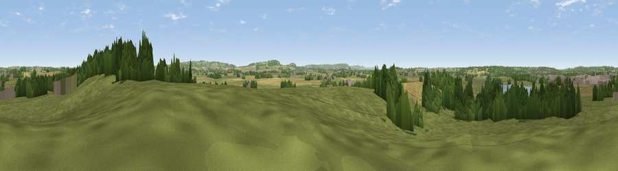

Viewpoint near Great Billington
#28584 in England · top 42% of its area beats it · near Great BillingtonThe view, rendered

A 360° render of this exact spot computed from the terrain model, tree cover and land cover — summer colours, afternoon light, calibrated against photographs of famous viewpoints. Real trees, hedges and buildings will differ in detail.
The panorama
Grey silhouette: terrain skyline in each direction (720 bearings, Earth curvature and refraction included). Dashed green: skyline with trees (+15 m) and buildings (+8 m) as obstacles. Blue strip: how far the ground is visible on each bearing.
Where the view opens
Wedge length = distance to the farthest visible ground on that bearing (vegetation-aware). Rings at 10, 25 and 50 km.
What fills the view
59% grassland · 18% cropland · 16% woodland · 4% built-up · 2% water
Angular shares of the visible panorama (visual magnitude), not map area. Landscape diversity 0.50 (0–1 Shannon).
Key numbers
More beautiful places nearby
The staircase of upgrades: each row has a higher view potential than everything closer. Driving times are estimates from straight-line distance, calibrated against real road routing — check an actual route before setting out.
| Place | Direction | Drive | Score |
|---|---|---|---|
| Billington Hill | ENE · 1 km | ~2 min | 47.4 |
| Viewpoint near Totternhoe | E · 4 km | ~9 min | 51.6 |
| Beacon Hill | SSE · 6 km | ~13 min | 74.1 |
| Viewpoint near Halton | SSW · 13 km | ~24 min | 74.3 |
| Coombe Hill Monument | SSW · 18 km | ~31 min | 75.5 |
| Viewpoint near Woolstone | WSW · 73 km | ~97 min | 76.7 |
| Viewpoint near Meon Vale | WNW · 79 km | ~103 min | 77.0 |
| Broadway Hill | W · 83 km | ~107 min | 77.7 |
51.89250, -0.63870 · source: screening · position refined by local search. Computed location — check access rights before visiting.